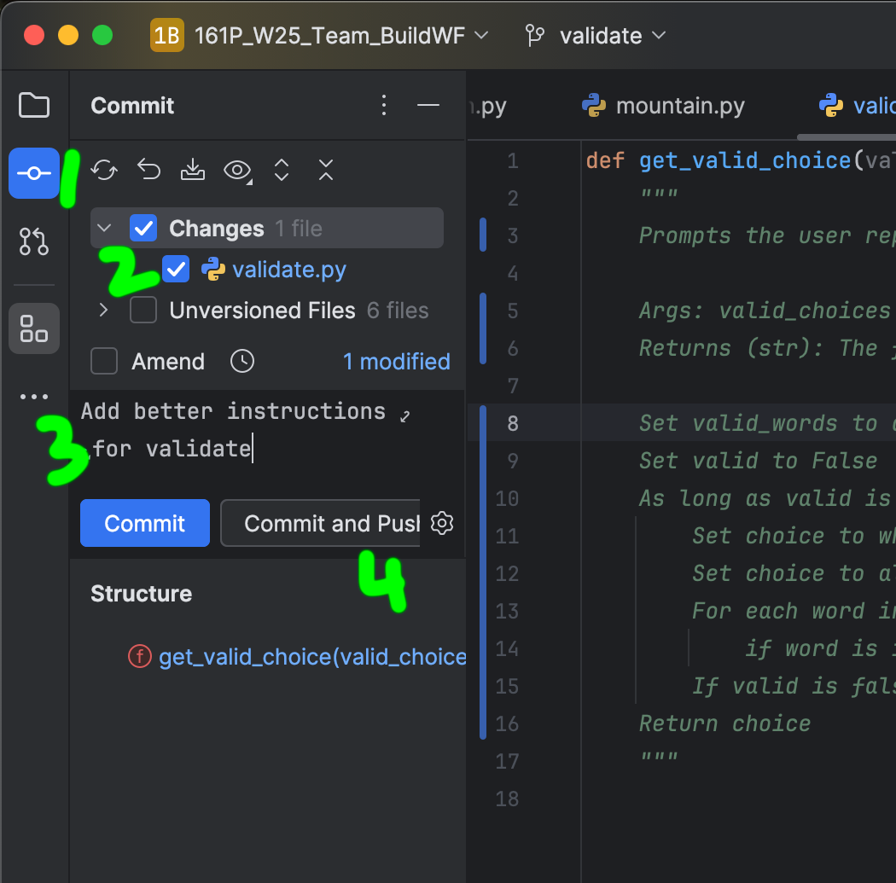
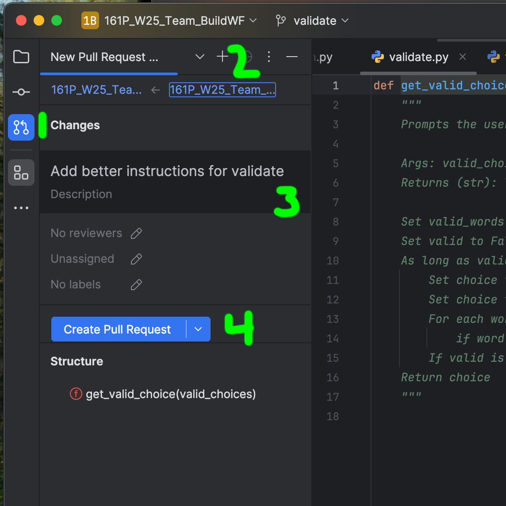
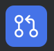
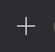

Team Build
Most programmers work on a team, which requires careful coordination to ensure all parts of the program work well together. This activity gives you practice adhering to specifications and introduces you to GitHub, a platform commonly used by programmers to collaborate on projects being managed with the git version control system.
Sign Up and Share GitHub Username
- Sign Up: If you don't already have one, sign up for a GitHub account. Follow the prompts to set up your username, email, and password. Verify your email address to activate the account.
- Share Username: Add your username in the spreadsheet below, so I can invite you to collaborate on our Team Build.
Access Team Build Repo on GitHub
- Accept Invitation: Check your email for an invitation to join the Team Build repository (repo). Click on the link provided in the email to accept the invitation.
- Confirm Access: Go to the Team Build and verify you have access to it. Can you see the repo? If you click on a file, do you see a pencil icon showing you can edit it?
Set Up Environment
This assumes you plan to use PyCharm.
- If you haven't done so already, install PyCharm
- If you haven't done so already, install Git.
Clone Repo
Open PyCharm and do the following to get a copy of the Team Repo on your machine, so you can work on it.
- Go to VCS > Get from Version Control....
- In the dialog box that pops up, select GitHub on the left.
- Click the Log In via GitHub... button.
- Click the Authorize in GitHub button on the browser page which opens.
- Click the Authorize JetBrains button.
- Click the Use passkey button and complete the sign in process.
- Enter the repo URL https://github.com/majchrzakt/161P_W25_Team_Build.git
- Choose a directory on your machine to clone the project into.
- Click the Clone button to create a local copy of the repo.
- Click the Trust Project button.
Create Branch for Your Function
Create a new branch where you'll work on your function, either alone or with a partner.
- Open Terminal in PyCharm: Go to View > Tool Windows > Terminal
- Check Out Main Branch:
git checkout
main
This ensures you're on the main branch.
- Update Main Branch:
git
pull origin main
This ensures you have the latest changes.
- Create and Switch to New Branch:
git checkout -b your-function-name
Change your-function-name to the name of your function (e.g., git checkout -b validate).
- Write and Test Code: Write and test the code for your function. If necessary add a temporary function call to your function in main. Add your name(s) to the function's docstring.
Commit and Push Your Branch
When you're done with your function, you'll push your branch back to the repo where we'll all be able to see your work. Because you made a branch, it won't automatically try to overwrite the main branch where all our work will come together.
Refer to this image and take the steps indicated below.

- Open Commit Tool: Click the commit icon.
- Stage Changes: Put a check in the boxes next to the files you changed and want to push to the Team Build
- Write Commit Message: Write a meaningful commit message in the active tense (i.e., write Add rather than Added).
- Commit Changes: Click the Commit and Push button.
- Push Remote Branch to Origin: Click the Push button in the dialog box that appears.
Create Pull Request
Make a pull request to have your branch merged into the main branch. I'll act as the team lead and manage merging everyone's branches into main.
Refer to this image and take the steps indicated below.

- Click the pull request icon.

- Click the plus sign.

- Add/update the Description.
- Click the Create Pull Request button.
Once all branches are merged into main, you can fetch the latest version of the code by choosing Git > Pull, then clicking the Pull button in the dialog box. Then you can play the fully functional adventure game we created together!
Biggest Take Away
To earn credit for this activity, post your final thoughts on this experience in the Learning Community Forum. Discuss any challenges and how you overcame them.
Late Work
If you missed completing this in class and want to complete it now (before midnight on Sunday, March 16, 2025), please follow the instructions above. After you create your GitHub account, please email me your user name, so I can add you as a contributor. Choose one of the storyline functions to edit (e.g., cave, forest, mountain, town). Don't change what another student wrote. Just add onto it. Send me an email once you've finished posting your biggest take away from the assignment.